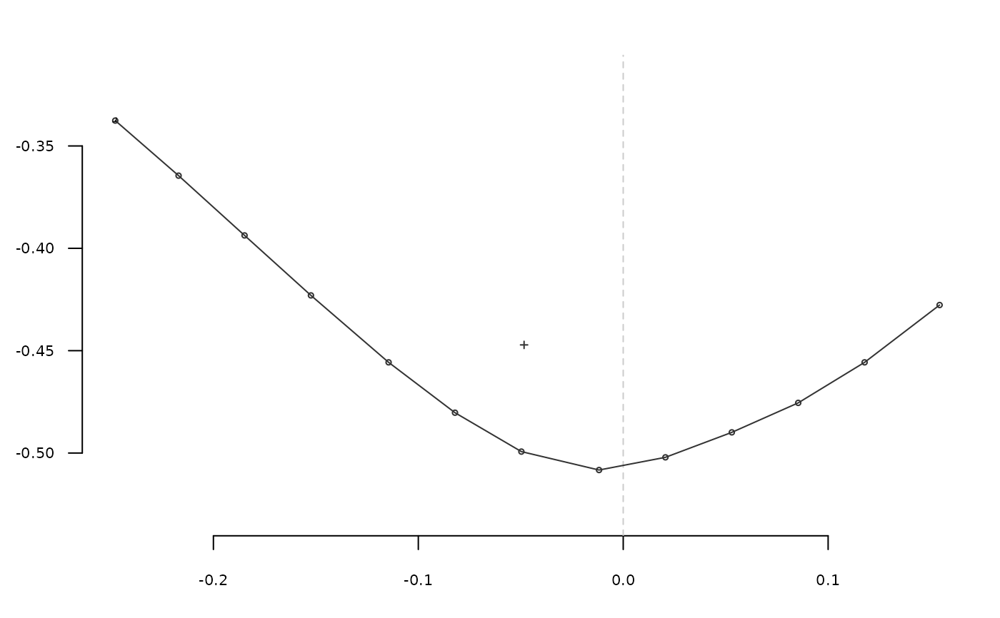
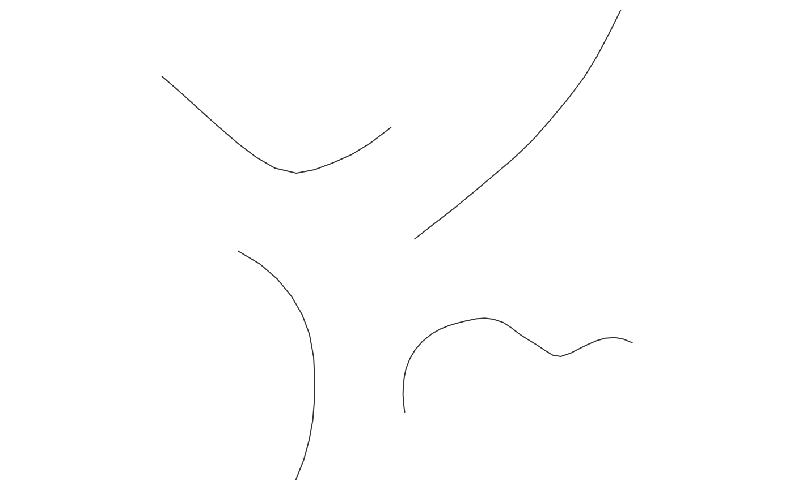
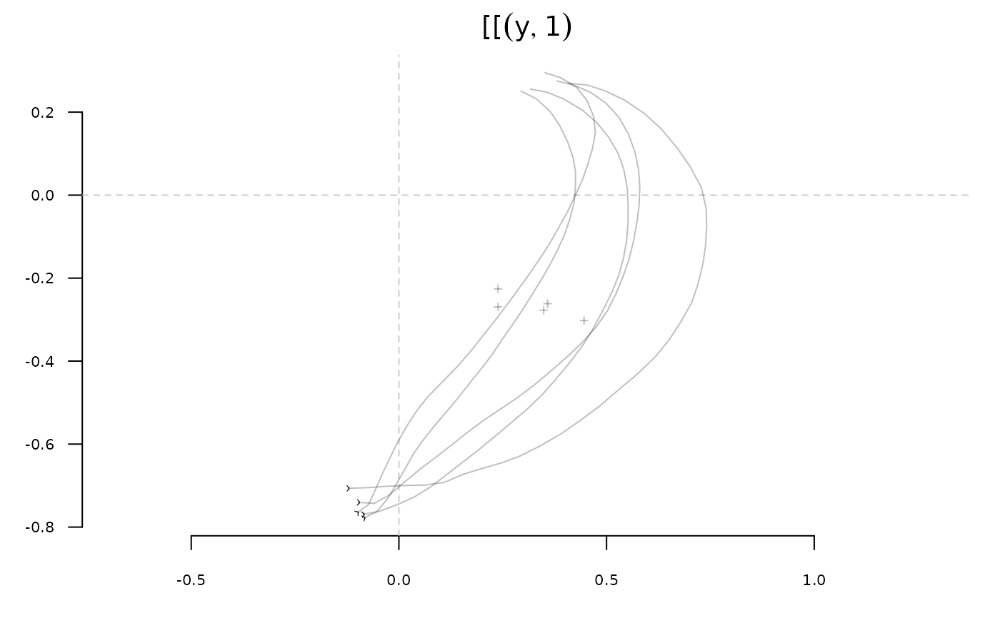
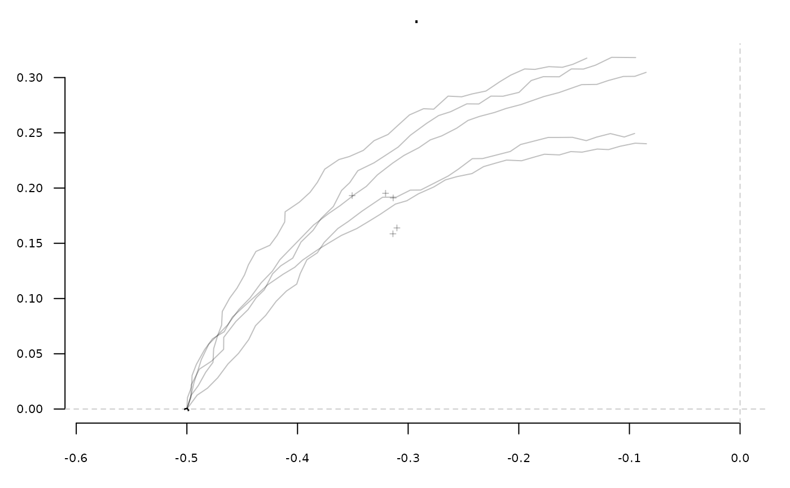
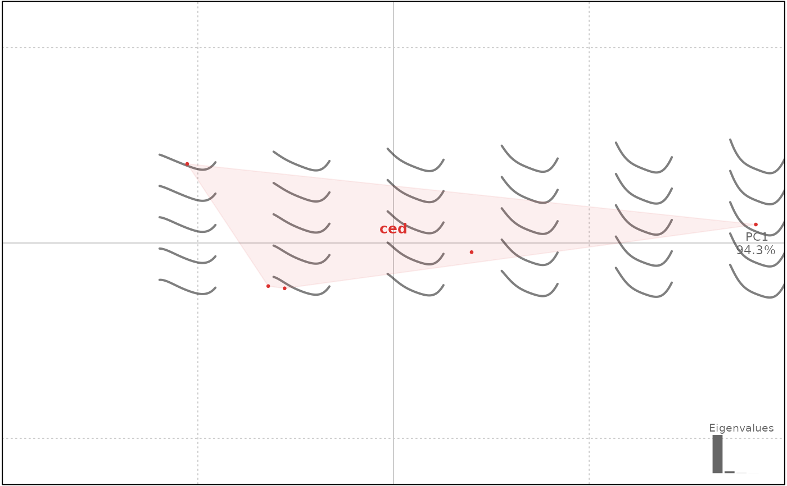

Takes a shape with n coordinates. When you pass this function with at least two ids (<= n), the shape will be open on the corresponding coordinates and slices returned as a list
coo_slice(coo, ids, ldk)
| coo |
|
|---|---|
| ids |
|
| ldk |
|
a list of shapes or a list of Opn
Have a look to coo_slidegap if you have problems with gaps after slicing around landmarks and/or starting points.
Other coo_ utilities:
coo_aligncalliper(),
coo_alignminradius(),
coo_alignxax(),
coo_align(),
coo_baseline(),
coo_bookstein(),
coo_boundingbox(),
coo_calliper(),
coo_centdist(),
coo_center(),
coo_centpos(),
coo_close(),
coo_down(),
coo_dxy(),
coo_extract(),
coo_flipx(),
coo_force2close(),
coo_interpolate(),
coo_is_closed(),
coo_jitter(),
coo_left(),
coo_likely_clockwise(),
coo_nb(),
coo_perim(),
coo_range(),
coo_rev(),
coo_right(),
coo_rotatecenter(),
coo_rotate(),
coo_sample_prop(),
coo_samplerr(),
coo_sample(),
coo_scale(),
coo_shearx(),
coo_slidedirection(),
coo_slidegap(),
coo_slide(),
coo_smoothcurve(),
coo_smooth(),
coo_template(),
coo_trans(),
coo_trimbottom(),
coo_trimtop(),
coo_trim(),
coo_untiltx(),
coo_up(),
is_equallyspacedradii()
h <- slice(hearts, 1:5) # speed purpose only # single shape, a list of matrices is returned sh <- coo_slice(h[1], c(12, 24, 36, 48)) coo_plot(sh[[1]])# on a Coo, a list of Opn is returned # makes no sense if shapes are not normalized first sh2 <- coo_slice(h, c(12, 24, 36, 48)) panel(sh2[[1]])#> iteration: 1 gain: 8.1326 #> iteration: 2 gain: 0.00031224#>x$ldk[1:5]#> [[1]] #> [1] 65 56 50 19 #> #> [[2]] #> [1] 69 60 52 21 #> #> [[3]] #> [1] 68 60 51 21 #> #> [[4]] #> [1] 69 59 53 23 #> #> [[5]] #> [1] 71 61 54 21 #>#>#># new ldks from tipping points, new ldks from angle olea %>% slice(1:5) %>% # for the sake of speed def_ldk_tips %>% def_ldk_angle(0.75*pi) %>% def_ldk_angle(0.25*pi) %>% coo_slice(ldk =1:4) -> oleas oleas[[1]] %>% stack#>oleas[[2]] %>% stack # etc.#>#> shp1 shp2 shp3 shp4 shp5 #> 0.001684956 0.007028829 0.010968094 0.009962128 0.016920135#>#>#>